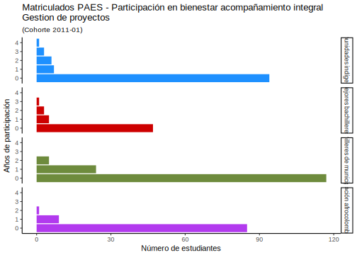
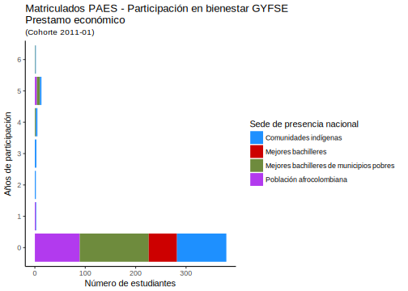
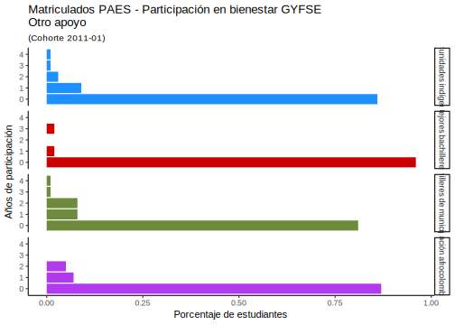
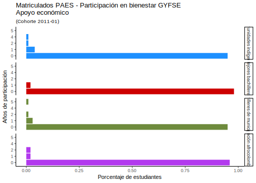
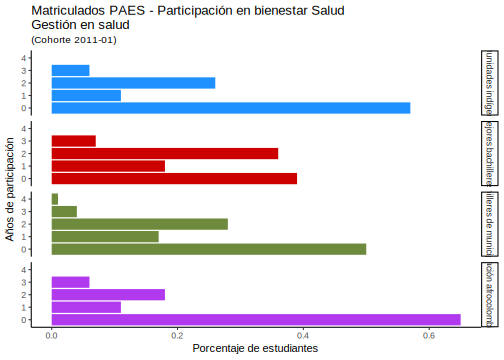
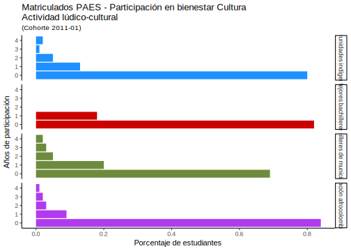
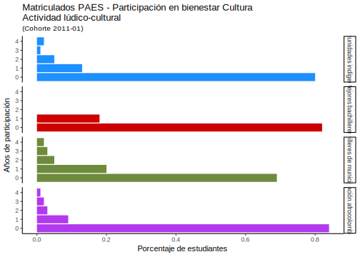

10.12 Cantidad de participaciones
## # A tibble: 7 x 2
## # Groups: B_Acomp_int [7]
## B_Acomp_int n
## <dbl> <int>
## 1 0 116
## 2 1 147
## 3 2 75
## 4 3 35
## 5 4 17
## 6 5 13
## 7 6 5## # A tibble: 25 x 3
## # Groups: B_Acomp_int, SUBACCESO [25]
## B_Acomp_int SUBACCESO n
## <chr> <chr> <int>
## 1 0 Comunidades indígenas 16
## 2 0 Mejores bachilleres 20
## 3 0 Mejores bachilleres de municipios pobres 52
## 4 0 Población afrocolombiana 28
## 5 1 Comunidades indígenas 47
## 6 1 Mejores bachilleres 21
## 7 1 Mejores bachilleres de municipios pobres 45
## 8 1 Población afrocolombiana 34
## 9 2 Comunidades indígenas 21
## 10 2 Mejores bachilleres 8
## # ... with 15 more rows## # A tibble: 25 x 5
## # Groups: B_Acomp_int [7]
## B_Acomp_int SUBACCESO n N Porcentaje
## <chr> <chr> <int> <int> <dbl>
## 1 0 Comunidades indígenas 16 111 0.14
## 2 0 Mejores bachilleres 20 56 0.36
## 3 0 Mejores bachilleres de municipios p~ 52 146 0.36
## 4 0 Población afrocolombiana 28 95 0.290
## 5 1 Comunidades indígenas 47 111 0.42
## 6 1 Mejores bachilleres 21 56 0.38
## 7 1 Mejores bachilleres de municipios p~ 45 146 0.31
## 8 1 Población afrocolombiana 34 95 0.36
## 9 2 Comunidades indígenas 21 111 0.19
## 10 2 Mejores bachilleres 8 56 0.14
## # ... with 15 more rows## # A tibble: 5 x 2
## # Groups: B_Acomp_int_gest_proy [5]
## B_Acomp_int_gest_proy n
## <dbl> <int>
## 1 0 343
## 2 1 45
## 3 2 15
## 4 3 4
## 5 4 1## # A tibble: 15 x 3
## # Groups: B_Acomp_int_gest_proy, SUBACCESO [15]
## B_Acomp_int_gest_proy SUBACCESO n
## <chr> <chr> <int>
## 1 0 Comunidades indígenas 94
## 2 0 Mejores bachilleres 47
## 3 0 Mejores bachilleres de municipios pobres 117
## 4 0 Población afrocolombiana 85
## 5 1 Comunidades indígenas 7
## 6 1 Mejores bachilleres 5
## 7 1 Mejores bachilleres de municipios pobres 24
## 8 1 Población afrocolombiana 9
## 9 2 Comunidades indígenas 6
## 10 2 Mejores bachilleres 3
## 11 2 Mejores bachilleres de municipios pobres 5
## 12 2 Población afrocolombiana 1
## 13 3 Comunidades indígenas 3
## 14 3 Mejores bachilleres 1
## 15 4 Comunidades indígenas 1## # A tibble: 15 x 5
## # Groups: B_Acomp_int_gest_proy [5]
## B_Acomp_int_gest_proy SUBACCESO n N Porcentaje
## <chr> <chr> <int> <int> <dbl>
## 1 0 Comunidades indígenas 94 111 0.85
## 2 0 Mejores bachilleres 47 56 0.84
## 3 0 Mejores bachilleres de mu~ 117 146 0.8
## 4 0 Población afrocolombiana 85 95 0.89
## 5 1 Comunidades indígenas 7 111 0.06
## 6 1 Mejores bachilleres 5 56 0.09
## 7 1 Mejores bachilleres de mu~ 24 146 0.16
## 8 1 Población afrocolombiana 9 95 0.09
## 9 2 Comunidades indígenas 6 111 0.05
## 10 2 Mejores bachilleres 3 56 0.05
## 11 2 Mejores bachilleres de mu~ 5 146 0.03
## 12 2 Población afrocolombiana 1 95 0.01
## 13 3 Comunidades indígenas 3 111 0.03
## 14 3 Mejores bachilleres 1 56 0.02
## 15 4 Comunidades indígenas 1 111 0.01
## # A tibble: 4 x 2
## # Groups: B_Acomp_int_inducc_prepar_camb [4]
## B_Acomp_int_inducc_prepar_camb n
## <dbl> <int>
## 1 0 345
## 2 1 39
## 3 2 21
## 4 3 3## # A tibble: 15 x 3
## # Groups: B_Acomp_int_inducc_prepar_camb, SUBACCESO [15]
## B_Acomp_int_inducc_prepar_camb SUBACCESO n
## <chr> <chr> <int>
## 1 0 Comunidades indígenas 92
## 2 0 Mejores bachilleres 47
## 3 0 Mejores bachilleres de municipios~ 126
## 4 0 Población afrocolombiana 80
## 5 1 Comunidades indígenas 9
## 6 1 Mejores bachilleres 7
## 7 1 Mejores bachilleres de municipios~ 12
## 8 1 Población afrocolombiana 11
## 9 2 Comunidades indígenas 9
## 10 2 Mejores bachilleres 2
## 11 2 Mejores bachilleres de municipios~ 7
## 12 2 Población afrocolombiana 3
## 13 3 Comunidades indígenas 1
## 14 3 Mejores bachilleres de municipios~ 1
## 15 3 Población afrocolombiana 1## # A tibble: 15 x 5
## # Groups: B_Acomp_int_inducc_prepar_camb [4]
## B_Acomp_int_inducc_prepar_camb SUBACCESO n N Porcentaje
## <chr> <chr> <int> <int> <dbl>
## 1 0 Comunidades indí~ 92 111 0.83
## 2 0 Mejores bachille~ 47 56 0.84
## 3 0 Mejores bachille~ 126 146 0.86
## 4 0 Población afroco~ 80 95 0.84
## 5 1 Comunidades indí~ 9 111 0.08
## 6 1 Mejores bachille~ 7 56 0.12
## 7 1 Mejores bachille~ 12 146 0.08
## 8 1 Población afroco~ 11 95 0.12
## 9 2 Comunidades indí~ 9 111 0.08
## 10 2 Mejores bachille~ 2 56 0.04
## 11 2 Mejores bachille~ 7 146 0.05
## 12 2 Población afroco~ 3 95 0.03
## 13 3 Comunidades indí~ 1 111 0.01
## 14 3 Mejores bachille~ 1 146 0.01
## 15 3 Población afroco~ 1 95 0.01## # A tibble: 6 x 2
## # Groups: B_Acomp_int_vid_universit [6]
## B_Acomp_int_vid_universit n
## <dbl> <int>
## 1 0 157
## 2 1 160
## 3 2 53
## 4 3 21
## 5 4 10
## 6 5 7## # A tibble: 23 x 3
## # Groups: B_Acomp_int_vid_universit, SUBACCESO [23]
## B_Acomp_int_vid_universit SUBACCESO n
## <chr> <chr> <int>
## 1 0 Comunidades indígenas 21
## 2 0 Mejores bachilleres 27
## 3 0 Mejores bachilleres de municipios pobr~ 74
## 4 0 Población afrocolombiana 35
## 5 1 Comunidades indígenas 54
## 6 1 Mejores bachilleres 22
## 7 1 Mejores bachilleres de municipios pobr~ 45
## 8 1 Población afrocolombiana 39
## 9 2 Comunidades indígenas 20
## 10 2 Mejores bachilleres 4
## # ... with 13 more rows## # A tibble: 23 x 5
## # Groups: B_Acomp_int_vid_universit [6]
## B_Acomp_int_vid_universit SUBACCESO n N Porcentaje
## <chr> <chr> <int> <int> <dbl>
## 1 0 Comunidades indígenas 21 111 0.19
## 2 0 Mejores bachilleres 27 56 0.48
## 3 0 Mejores bachilleres d~ 74 146 0.51
## 4 0 Población afrocolombi~ 35 95 0.37
## 5 1 Comunidades indígenas 54 111 0.49
## 6 1 Mejores bachilleres 22 56 0.39
## 7 1 Mejores bachilleres d~ 45 146 0.31
## 8 1 Población afrocolombi~ 39 95 0.41
## 9 2 Comunidades indígenas 20 111 0.18
## 10 2 Mejores bachilleres 4 56 0.07
## # ... with 13 more rows## # A tibble: 5 x 2
## # Groups: B_Acomp_conviv [5]
## B_Acomp_conviv n
## <dbl> <int>
## 1 0 349
## 2 1 33
## 3 2 18
## 4 3 6
## 5 4 2## # A tibble: 16 x 3
## # Groups: B_Acomp_conviv, SUBACCESO [16]
## B_Acomp_conviv SUBACCESO n
## <chr> <chr> <int>
## 1 0 Comunidades indígenas 95
## 2 0 Mejores bachilleres 54
## 3 0 Mejores bachilleres de municipios pobres 122
## 4 0 Población afrocolombiana 78
## 5 1 Comunidades indígenas 11
## 6 1 Mejores bachilleres 2
## 7 1 Mejores bachilleres de municipios pobres 11
## 8 1 Población afrocolombiana 9
## 9 2 Comunidades indígenas 4
## 10 2 Mejores bachilleres de municipios pobres 8
## 11 2 Población afrocolombiana 6
## 12 3 Comunidades indígenas 1
## 13 3 Mejores bachilleres de municipios pobres 4
## 14 3 Población afrocolombiana 1
## 15 4 Mejores bachilleres de municipios pobres 1
## 16 4 Población afrocolombiana 1## # A tibble: 16 x 5
## # Groups: B_Acomp_conviv [5]
## B_Acomp_conviv SUBACCESO n N Porcentaje
## <chr> <chr> <int> <int> <dbl>
## 1 0 Comunidades indígenas 95 111 0.86
## 2 0 Mejores bachilleres 54 56 0.96
## 3 0 Mejores bachilleres de municipio~ 122 146 0.84
## 4 0 Población afrocolombiana 78 95 0.82
## 5 1 Comunidades indígenas 11 111 0.1
## 6 1 Mejores bachilleres 2 56 0.04
## 7 1 Mejores bachilleres de municipio~ 11 146 0.08
## 8 1 Población afrocolombiana 9 95 0.09
## 9 2 Comunidades indígenas 4 111 0.04
## 10 2 Mejores bachilleres de municipio~ 8 146 0.05
## 11 2 Población afrocolombiana 6 95 0.06
## 12 3 Comunidades indígenas 1 111 0.01
## 13 3 Mejores bachilleres de municipio~ 4 146 0.03
## 14 3 Población afrocolombiana 1 95 0.01
## 15 4 Mejores bachilleres de municipio~ 1 146 0.01
## 16 4 Población afrocolombiana 1 95 0.01## # A tibble: 3 x 2
## # Groups: B_Acomp_int_inc_disca [3]
## B_Acomp_int_inc_disca n
## <dbl> <int>
## 1 0 405
## 2 1 2
## 3 2 1## # A tibble: 7 x 3
## # Groups: B_Acomp_int_inc_disca, SUBACCESO [7]
## B_Acomp_int_inc_disca SUBACCESO n
## <chr> <chr> <int>
## 1 0 Comunidades indígenas 110
## 2 0 Mejores bachilleres 56
## 3 0 Mejores bachilleres de municipios pobres 146
## 4 0 Población afrocolombiana 93
## 5 1 Comunidades indígenas 1
## 6 1 Población afrocolombiana 1
## 7 2 Población afrocolombiana 1## # A tibble: 7 x 5
## # Groups: B_Acomp_int_inc_disca [3]
## B_Acomp_int_inc_disca SUBACCESO n N Porcentaje
## <chr> <chr> <int> <int> <dbl>
## 1 0 Comunidades indígenas 110 111 0.99
## 2 0 Mejores bachilleres 56 56 1
## 3 0 Mejores bachilleres de mun~ 146 146 1
## 4 0 Población afrocolombiana 93 95 0.98
## 5 1 Comunidades indígenas 1 111 0.01
## 6 1 Población afrocolombiana 1 95 0.01
## 7 2 Población afrocolombiana 1 95 0.01## # A tibble: 7 x 2
## # Groups: B_GYFSE [7]
## B_GYFSE n
## <dbl> <int>
## 1 0 224
## 2 1 49
## 3 2 29
## 4 3 21
## 5 4 32
## 6 5 33
## 7 6 20## # A tibble: 26 x 3
## # Groups: B_GYFSE, SUBACCESO [26]
## B_GYFSE SUBACCESO n
## <chr> <chr> <int>
## 1 0 Comunidades indígenas 53
## 2 0 Mejores bachilleres 51
## 3 0 Mejores bachilleres de municipios pobres 71
## 4 0 Población afrocolombiana 49
## 5 1 Comunidades indígenas 11
## 6 1 Mejores bachilleres 2
## 7 1 Mejores bachilleres de municipios pobres 17
## 8 1 Población afrocolombiana 19
## 9 2 Comunidades indígenas 11
## 10 2 Mejores bachilleres 1
## # ... with 16 more rows## # A tibble: 26 x 5
## # Groups: B_GYFSE [7]
## B_GYFSE SUBACCESO n N Porcentaje
## <chr> <chr> <int> <int> <dbl>
## 1 0 Comunidades indígenas 53 111 0.48
## 2 0 Mejores bachilleres 51 56 0.91
## 3 0 Mejores bachilleres de municipios pobres 71 146 0.49
## 4 0 Población afrocolombiana 49 95 0.52
## 5 1 Comunidades indígenas 11 111 0.1
## 6 1 Mejores bachilleres 2 56 0.04
## 7 1 Mejores bachilleres de municipios pobres 17 146 0.12
## 8 1 Población afrocolombiana 19 95 0.2
## 9 2 Comunidades indígenas 11 111 0.1
## 10 2 Mejores bachilleres 1 56 0.02
## # ... with 16 more rows## # A tibble: 7 x 2
## # Groups: B_GYFSE_ALOJAM [7]
## B_GYFSE_ALOJAM n
## <dbl> <int>
## 1 0 360
## 2 1 10
## 3 2 8
## 4 3 6
## 5 4 8
## 6 5 10
## 7 6 6## # A tibble: 20 x 3
## # Groups: B_GYFSE_ALOJAM, SUBACCESO [20]
## B_GYFSE_ALOJAM SUBACCESO n
## <chr> <chr> <int>
## 1 0 Comunidades indígenas 92
## 2 0 Mejores bachilleres 56
## 3 0 Mejores bachilleres de municipios pobres 129
## 4 0 Población afrocolombiana 83
## 5 1 Comunidades indígenas 5
## 6 1 Mejores bachilleres de municipios pobres 2
## 7 1 Población afrocolombiana 3
## 8 2 Comunidades indígenas 6
## 9 2 Mejores bachilleres de municipios pobres 2
## 10 3 Comunidades indígenas 1
## 11 3 Mejores bachilleres de municipios pobres 2
## 12 3 Población afrocolombiana 3
## 13 4 Comunidades indígenas 1
## 14 4 Mejores bachilleres de municipios pobres 5
## 15 4 Población afrocolombiana 2
## 16 5 Comunidades indígenas 3
## 17 5 Mejores bachilleres de municipios pobres 6
## 18 5 Población afrocolombiana 1
## 19 6 Comunidades indígenas 3
## 20 6 Población afrocolombiana 3## # A tibble: 20 x 5
## # Groups: B_GYFSE_ALOJAM [7]
## B_GYFSE_ALOJAM SUBACCESO n N Porcentaje
## <chr> <chr> <int> <int> <dbl>
## 1 0 Comunidades indígenas 92 111 0.83
## 2 0 Mejores bachilleres 56 56 1
## 3 0 Mejores bachilleres de municipio~ 129 146 0.88
## 4 0 Población afrocolombiana 83 95 0.87
## 5 1 Comunidades indígenas 5 111 0.05
## 6 1 Mejores bachilleres de municipio~ 2 146 0.01
## 7 1 Población afrocolombiana 3 95 0.03
## 8 2 Comunidades indígenas 6 111 0.05
## 9 2 Mejores bachilleres de municipio~ 2 146 0.01
## 10 3 Comunidades indígenas 1 111 0.01
## 11 3 Mejores bachilleres de municipio~ 2 146 0.01
## 12 3 Población afrocolombiana 3 95 0.03
## 13 4 Comunidades indígenas 1 111 0.01
## 14 4 Mejores bachilleres de municipio~ 5 146 0.03
## 15 4 Población afrocolombiana 2 95 0.02
## 16 5 Comunidades indígenas 3 111 0.03
## 17 5 Mejores bachilleres de municipio~ 6 146 0.04
## 18 5 Población afrocolombiana 1 95 0.01
## 19 6 Comunidades indígenas 3 111 0.03
## 20 6 Población afrocolombiana 3 95 0.03## # A tibble: 7 x 2
## # Groups: B_GYFSE_ALIM [7]
## B_GYFSE_ALIM n
## <dbl> <int>
## 1 0 285
## 2 1 33
## 3 2 20
## 4 3 24
## 5 4 25
## 6 5 12
## 7 6 9## # A tibble: 24 x 3
## # Groups: B_GYFSE_ALIM, SUBACCESO [24]
## B_GYFSE_ALIM SUBACCESO n
## <chr> <chr> <int>
## 1 0 Comunidades indígenas 71
## 2 0 Mejores bachilleres 54
## 3 0 Mejores bachilleres de municipios pobres 94
## 4 0 Población afrocolombiana 66
## 5 1 Comunidades indígenas 8
## 6 1 Mejores bachilleres de municipios pobres 14
## 7 1 Población afrocolombiana 11
## 8 2 Comunidades indígenas 9
## 9 2 Mejores bachilleres 1
## 10 2 Mejores bachilleres de municipios pobres 5
## # ... with 14 more rows## # A tibble: 24 x 5
## # Groups: B_GYFSE_ALIM [7]
## B_GYFSE_ALIM SUBACCESO n N Porcentaje
## <chr> <chr> <int> <int> <dbl>
## 1 0 Comunidades indígenas 71 111 0.64
## 2 0 Mejores bachilleres 54 56 0.96
## 3 0 Mejores bachilleres de municipios ~ 94 146 0.64
## 4 0 Población afrocolombiana 66 95 0.69
## 5 1 Comunidades indígenas 8 111 0.07
## 6 1 Mejores bachilleres de municipios ~ 14 146 0.1
## 7 1 Población afrocolombiana 11 95 0.12
## 8 2 Comunidades indígenas 9 111 0.08
## 9 2 Mejores bachilleres 1 56 0.02
## 10 2 Mejores bachilleres de municipios ~ 5 146 0.03
## # ... with 14 more rows
## # A tibble: 6 x 2
## # Groups: B_GYFSE_TRANSP [6]
## B_GYFSE_TRANSP n
## <dbl> <int>
## 1 0 382
## 2 1 10
## 3 2 6
## 4 3 5
## 5 4 3
## 6 5 2## # A tibble: 15 x 3
## # Groups: B_GYFSE_TRANSP, SUBACCESO [15]
## B_GYFSE_TRANSP SUBACCESO n
## <chr> <chr> <int>
## 1 0 Comunidades indígenas 104
## 2 0 Mejores bachilleres 55
## 3 0 Mejores bachilleres de municipios pobres 133
## 4 0 Población afrocolombiana 90
## 5 1 Comunidades indígenas 1
## 6 1 Mejores bachilleres 1
## 7 1 Mejores bachilleres de municipios pobres 4
## 8 1 Población afrocolombiana 4
## 9 2 Comunidades indígenas 2
## 10 2 Mejores bachilleres de municipios pobres 3
## 11 2 Población afrocolombiana 1
## 12 3 Comunidades indígenas 2
## 13 3 Mejores bachilleres de municipios pobres 3
## 14 4 Mejores bachilleres de municipios pobres 3
## 15 5 Comunidades indígenas 2## # A tibble: 15 x 5
## # Groups: B_GYFSE_TRANSP [6]
## B_GYFSE_TRANSP SUBACCESO n N Porcentaje
## <chr> <chr> <int> <int> <dbl>
## 1 0 Comunidades indígenas 104 111 0.94
## 2 0 Mejores bachilleres 55 56 0.98
## 3 0 Mejores bachilleres de municipio~ 133 146 0.91
## 4 0 Población afrocolombiana 90 95 0.95
## 5 1 Comunidades indígenas 1 111 0.01
## 6 1 Mejores bachilleres 1 56 0.02
## 7 1 Mejores bachilleres de municipio~ 4 146 0.03
## 8 1 Población afrocolombiana 4 95 0.04
## 9 2 Comunidades indígenas 2 111 0.02
## 10 2 Mejores bachilleres de municipio~ 3 146 0.02
## 11 2 Población afrocolombiana 1 95 0.01
## 12 3 Comunidades indígenas 2 111 0.02
## 13 3 Mejores bachilleres de municipio~ 3 146 0.02
## 14 4 Mejores bachilleres de municipio~ 3 146 0.02
## 15 5 Comunidades indígenas 2 111 0.02## # A tibble: 7 x 2
## # Groups: B_GYFSE_PREST [7]
## B_GYFSE_PREST n
## <dbl> <int>
## 1 0 380
## 2 1 3
## 3 2 2
## 4 3 3
## 5 4 5
## 6 5 13
## 7 6 2## # A tibble: 15 x 3
## # Groups: B_GYFSE_PREST, SUBACCESO [15]
## B_GYFSE_PREST SUBACCESO n
## <chr> <chr> <int>
## 1 0 Comunidades indígenas 98
## 2 0 Mejores bachilleres 56
## 3 0 Mejores bachilleres de municipios pobres 137
## 4 0 Población afrocolombiana 89
## 5 1 Comunidades indígenas 1
## 6 1 Población afrocolombiana 2
## 7 2 Comunidades indígenas 2
## 8 3 Comunidades indígenas 3
## 9 4 Comunidades indígenas 3
## 10 4 Mejores bachilleres de municipios pobres 2
## 11 5 Comunidades indígenas 3
## 12 5 Mejores bachilleres de municipios pobres 6
## 13 5 Población afrocolombiana 4
## 14 6 Comunidades indígenas 1
## 15 6 Mejores bachilleres de municipios pobres 1## # A tibble: 15 x 5
## # Groups: B_GYFSE_PREST [7]
## B_GYFSE_PREST SUBACCESO n N Porcentaje
## <chr> <chr> <int> <int> <dbl>
## 1 0 Comunidades indígenas 98 111 0.88
## 2 0 Mejores bachilleres 56 56 1
## 3 0 Mejores bachilleres de municipios~ 137 146 0.94
## 4 0 Población afrocolombiana 89 95 0.94
## 5 1 Comunidades indígenas 1 111 0.01
## 6 1 Población afrocolombiana 2 95 0.02
## 7 2 Comunidades indígenas 2 111 0.02
## 8 3 Comunidades indígenas 3 111 0.03
## 9 4 Comunidades indígenas 3 111 0.03
## 10 4 Mejores bachilleres de municipios~ 2 146 0.01
## 11 5 Comunidades indígenas 3 111 0.03
## 12 5 Mejores bachilleres de municipios~ 6 146 0.04
## 13 5 Población afrocolombiana 4 95 0.04
## 14 6 Comunidades indígenas 1 111 0.01
## 15 6 Mejores bachilleres de municipios~ 1 146 0.01
## # A tibble: 5 x 2
## # Groups: B_GYFSE_OTRO [5]
## B_GYFSE_OTRO n
## <dbl> <int>
## 1 0 351
## 2 1 30
## 3 2 20
## 4 3 4
## 5 4 3## # A tibble: 16 x 3
## # Groups: B_GYFSE_OTRO, SUBACCESO [16]
## B_GYFSE_OTRO SUBACCESO n
## <chr> <chr> <int>
## 1 0 Comunidades indígenas 96
## 2 0 Mejores bachilleres 54
## 3 0 Mejores bachilleres de municipios pobres 118
## 4 0 Población afrocolombiana 83
## 5 1 Comunidades indígenas 10
## 6 1 Mejores bachilleres 1
## 7 1 Mejores bachilleres de municipios pobres 12
## 8 1 Población afrocolombiana 7
## 9 2 Comunidades indígenas 3
## 10 2 Mejores bachilleres de municipios pobres 12
## 11 2 Población afrocolombiana 5
## 12 3 Comunidades indígenas 1
## 13 3 Mejores bachilleres 1
## 14 3 Mejores bachilleres de municipios pobres 2
## 15 4 Comunidades indígenas 1
## 16 4 Mejores bachilleres de municipios pobres 2## # A tibble: 16 x 5
## # Groups: B_GYFSE_OTRO [5]
## B_GYFSE_OTRO SUBACCESO n N Porcentaje
## <chr> <chr> <int> <int> <dbl>
## 1 0 Comunidades indígenas 96 111 0.86
## 2 0 Mejores bachilleres 54 56 0.96
## 3 0 Mejores bachilleres de municipios ~ 118 146 0.81
## 4 0 Población afrocolombiana 83 95 0.87
## 5 1 Comunidades indígenas 10 111 0.09
## 6 1 Mejores bachilleres 1 56 0.02
## 7 1 Mejores bachilleres de municipios ~ 12 146 0.08
## 8 1 Población afrocolombiana 7 95 0.07
## 9 2 Comunidades indígenas 3 111 0.03
## 10 2 Mejores bachilleres de municipios ~ 12 146 0.08
## 11 2 Población afrocolombiana 5 95 0.05
## 12 3 Comunidades indígenas 1 111 0.01
## 13 3 Mejores bachilleres 1 56 0.02
## 14 3 Mejores bachilleres de municipios ~ 2 146 0.01
## 15 4 Comunidades indígenas 1 111 0.01
## 16 4 Mejores bachilleres de municipios ~ 2 146 0.01
## # A tibble: 5 x 2
## # Groups: B_GYFSE_APOY_ECON [5]
## B_GYFSE_APOY_ECON n
## <dbl> <int>
## 1 0 390
## 2 1 11
## 3 2 5
## 4 4 1
## 5 5 1## # A tibble: 13 x 3
## # Groups: B_GYFSE_APOY_ECON, SUBACCESO [13]
## B_GYFSE_APOY_ECON SUBACCESO n
## <chr> <chr> <int>
## 1 0 Comunidades indígenas 105
## 2 0 Mejores bachilleres 55
## 3 0 Mejores bachilleres de municipios pobres 139
## 4 0 Población afrocolombiana 91
## 5 1 Comunidades indígenas 4
## 6 1 Mejores bachilleres 1
## 7 1 Mejores bachilleres de municipios pobres 4
## 8 1 Población afrocolombiana 2
## 9 2 Comunidades indígenas 1
## 10 2 Mejores bachilleres de municipios pobres 2
## 11 2 Población afrocolombiana 2
## 12 4 Comunidades indígenas 1
## 13 5 Mejores bachilleres de municipios pobres 1## # A tibble: 13 x 5
## # Groups: B_GYFSE_APOY_ECON [5]
## B_GYFSE_APOY_ECON SUBACCESO n N Porcentaje
## <chr> <chr> <int> <int> <dbl>
## 1 0 Comunidades indígenas 105 111 0.95
## 2 0 Mejores bachilleres 55 56 0.98
## 3 0 Mejores bachilleres de munici~ 139 146 0.95
## 4 0 Población afrocolombiana 91 95 0.96
## 5 1 Comunidades indígenas 4 111 0.04
## 6 1 Mejores bachilleres 1 56 0.02
## 7 1 Mejores bachilleres de munici~ 4 146 0.03
## 8 1 Población afrocolombiana 2 95 0.02
## 9 2 Comunidades indígenas 1 111 0.01
## 10 2 Mejores bachilleres de munici~ 2 146 0.01
## 11 2 Población afrocolombiana 2 95 0.02
## 12 4 Comunidades indígenas 1 111 0.01
## 13 5 Mejores bachilleres de munici~ 1 146 0.01
## # A tibble: 7 x 2
## # Groups: B_SALUD [7]
## B_SALUD n
## <dbl> <int>
## 1 0 46
## 2 1 135
## 3 2 57
## 4 3 61
## 5 4 55
## 6 5 37
## 7 6 17## # A tibble: 28 x 3
## # Groups: B_SALUD, SUBACCESO [28]
## B_SALUD SUBACCESO n
## <chr> <chr> <int>
## 1 0 Comunidades indígenas 13
## 2 0 Mejores bachilleres 9
## 3 0 Mejores bachilleres de municipios pobres 16
## 4 0 Población afrocolombiana 8
## 5 1 Comunidades indígenas 39
## 6 1 Mejores bachilleres 15
## 7 1 Mejores bachilleres de municipios pobres 37
## 8 1 Población afrocolombiana 44
## 9 2 Comunidades indígenas 16
## 10 2 Mejores bachilleres 10
## # ... with 18 more rows## # A tibble: 28 x 5
## # Groups: B_SALUD [7]
## B_SALUD SUBACCESO n N Porcentaje
## <chr> <chr> <int> <int> <dbl>
## 1 0 Comunidades indígenas 13 111 0.12
## 2 0 Mejores bachilleres 9 56 0.16
## 3 0 Mejores bachilleres de municipios pobres 16 146 0.11
## 4 0 Población afrocolombiana 8 95 0.08
## 5 1 Comunidades indígenas 39 111 0.35
## 6 1 Mejores bachilleres 15 56 0.27
## 7 1 Mejores bachilleres de municipios pobres 37 146 0.25
## 8 1 Población afrocolombiana 44 95 0.46
## 9 2 Comunidades indígenas 16 111 0.14
## 10 2 Mejores bachilleres 10 56 0.18
## # ... with 18 more rows## # A tibble: 3 x 2
## # Groups: B_SALUD_dism_fact_r [3]
## B_SALUD_dism_fact_r n
## <dbl> <int>
## 1 0 321
## 2 1 80
## 3 2 7## # A tibble: 11 x 3
## # Groups: B_SALUD_dism_fact_r, SUBACCESO [11]
## B_SALUD_dism_fact_r SUBACCESO n
## <chr> <chr> <int>
## 1 0 Comunidades indígenas 86
## 2 0 Mejores bachilleres 52
## 3 0 Mejores bachilleres de municipios pobres 114
## 4 0 Población afrocolombiana 69
## 5 1 Comunidades indígenas 23
## 6 1 Mejores bachilleres 4
## 7 1 Mejores bachilleres de municipios pobres 28
## 8 1 Población afrocolombiana 25
## 9 2 Comunidades indígenas 2
## 10 2 Mejores bachilleres de municipios pobres 4
## 11 2 Población afrocolombiana 1## # A tibble: 11 x 5
## # Groups: B_SALUD_dism_fact_r [3]
## B_SALUD_dism_fact_r SUBACCESO n N Porcentaje
## <chr> <chr> <int> <int> <dbl>
## 1 0 Comunidades indígenas 86 111 0.77
## 2 0 Mejores bachilleres 52 56 0.93
## 3 0 Mejores bachilleres de muni~ 114 146 0.78
## 4 0 Población afrocolombiana 69 95 0.73
## 5 1 Comunidades indígenas 23 111 0.21
## 6 1 Mejores bachilleres 4 56 0.07
## 7 1 Mejores bachilleres de muni~ 28 146 0.19
## 8 1 Población afrocolombiana 25 95 0.26
## 9 2 Comunidades indígenas 2 111 0.02
## 10 2 Mejores bachilleres de muni~ 4 146 0.03
## 11 2 Población afrocolombiana 1 95 0.01
## # A tibble: 6 x 2
## # Groups: B_SALUD_aten_prima_urgen [6]
## B_SALUD_aten_prima_urgen n
## <dbl> <int>
## 1 0 266
## 2 1 76
## 3 2 37
## 4 3 12
## 5 4 10
## 6 5 7## # A tibble: 21 x 3
## # Groups: B_SALUD_aten_prima_urgen, SUBACCESO [21]
## B_SALUD_aten_prima_urgen SUBACCESO n
## <chr> <chr> <int>
## 1 0 Comunidades indígenas 78
## 2 0 Mejores bachilleres 42
## 3 0 Mejores bachilleres de municipios pobres 81
## 4 0 Población afrocolombiana 65
## 5 1 Comunidades indígenas 15
## 6 1 Mejores bachilleres 11
## 7 1 Mejores bachilleres de municipios pobres 33
## 8 1 Población afrocolombiana 17
## 9 2 Comunidades indígenas 11
## 10 2 Mejores bachilleres 2
## # ... with 11 more rows## # A tibble: 21 x 5
## # Groups: B_SALUD_aten_prima_urgen [6]
## B_SALUD_aten_prima_urgen SUBACCESO n N Porcentaje
## <chr> <chr> <int> <int> <dbl>
## 1 0 Comunidades indígenas 78 111 0.7
## 2 0 Mejores bachilleres 42 56 0.75
## 3 0 Mejores bachilleres de~ 81 146 0.55
## 4 0 Población afrocolombia~ 65 95 0.68
## 5 1 Comunidades indígenas 15 111 0.14
## 6 1 Mejores bachilleres 11 56 0.2
## 7 1 Mejores bachilleres de~ 33 146 0.23
## 8 1 Población afrocolombia~ 17 95 0.18
## 9 2 Comunidades indígenas 11 111 0.1
## 10 2 Mejores bachilleres 2 56 0.04
## # ... with 11 more rows## # A tibble: 7 x 2
## # Groups: B_SALUD_p_y_p [7]
## B_SALUD_p_y_p n
## <dbl> <int>
## 1 0 94
## 2 1 146
## 3 2 61
## 4 3 42
## 5 4 42
## 6 5 19
## 7 6 4## # A tibble: 25 x 3
## # Groups: B_SALUD_p_y_p, SUBACCESO [25]
## B_SALUD_p_y_p SUBACCESO n
## <chr> <chr> <int>
## 1 0 Comunidades indígenas 17
## 2 0 Mejores bachilleres 20
## 3 0 Mejores bachilleres de municipios pobres 36
## 4 0 Población afrocolombiana 21
## 5 1 Comunidades indígenas 49
## 6 1 Mejores bachilleres 19
## 7 1 Mejores bachilleres de municipios pobres 42
## 8 1 Población afrocolombiana 36
## 9 2 Comunidades indígenas 14
## 10 2 Mejores bachilleres 9
## # ... with 15 more rows## # A tibble: 25 x 5
## # Groups: B_SALUD_p_y_p [7]
## B_SALUD_p_y_p SUBACCESO n N Porcentaje
## <chr> <chr> <int> <int> <dbl>
## 1 0 Comunidades indígenas 17 111 0.15
## 2 0 Mejores bachilleres 20 56 0.36
## 3 0 Mejores bachilleres de municipios~ 36 146 0.25
## 4 0 Población afrocolombiana 21 95 0.22
## 5 1 Comunidades indígenas 49 111 0.44
## 6 1 Mejores bachilleres 19 56 0.34
## 7 1 Mejores bachilleres de municipios~ 42 146 0.290
## 8 1 Población afrocolombiana 36 95 0.38
## 9 2 Comunidades indígenas 14 111 0.13
## 10 2 Mejores bachilleres 9 56 0.16
## # ... with 15 more rows## # A tibble: 5 x 2
## # Groups: B_SALUD_gest_y_salud [5]
## B_SALUD_gest_y_salud n
## <dbl> <int>
## 1 0 220
## 2 1 57
## 3 2 107
## 4 3 23
## 5 4 1## # A tibble: 17 x 3
## # Groups: B_SALUD_gest_y_salud, SUBACCESO [17]
## B_SALUD_gest_y_salud SUBACCESO n
## <chr> <chr> <int>
## 1 0 Comunidades indígenas 63
## 2 0 Mejores bachilleres 22
## 3 0 Mejores bachilleres de municipios pobres 73
## 4 0 Población afrocolombiana 62
## 5 1 Comunidades indígenas 12
## 6 1 Mejores bachilleres 10
## 7 1 Mejores bachilleres de municipios pobres 25
## 8 1 Población afrocolombiana 10
## 9 2 Comunidades indígenas 29
## 10 2 Mejores bachilleres 20
## 11 2 Mejores bachilleres de municipios pobres 41
## 12 2 Población afrocolombiana 17
## 13 3 Comunidades indígenas 7
## 14 3 Mejores bachilleres 4
## 15 3 Mejores bachilleres de municipios pobres 6
## 16 3 Población afrocolombiana 6
## 17 4 Mejores bachilleres de municipios pobres 1## # A tibble: 17 x 5
## # Groups: B_SALUD_gest_y_salud [5]
## B_SALUD_gest_y_salud SUBACCESO n N Porcentaje
## <chr> <chr> <int> <int> <dbl>
## 1 0 Comunidades indígenas 63 111 0.570
## 2 0 Mejores bachilleres 22 56 0.39
## 3 0 Mejores bachilleres de mun~ 73 146 0.5
## 4 0 Población afrocolombiana 62 95 0.65
## 5 1 Comunidades indígenas 12 111 0.11
## 6 1 Mejores bachilleres 10 56 0.18
## 7 1 Mejores bachilleres de mun~ 25 146 0.17
## 8 1 Población afrocolombiana 10 95 0.11
## 9 2 Comunidades indígenas 29 111 0.26
## 10 2 Mejores bachilleres 20 56 0.36
## 11 2 Mejores bachilleres de mun~ 41 146 0.28
## 12 2 Población afrocolombiana 17 95 0.18
## 13 3 Comunidades indígenas 7 111 0.06
## 14 3 Mejores bachilleres 4 56 0.07
## 15 3 Mejores bachilleres de mun~ 6 146 0.04
## 16 3 Población afrocolombiana 6 95 0.06
## 17 4 Mejores bachilleres de mun~ 1 146 0.01
## # A tibble: 7 x 2
## # Groups: B_deport [7]
## B_deport n
## <dbl> <int>
## 1 0 218
## 2 1 89
## 3 2 46
## 4 3 24
## 5 4 19
## 6 5 11
## 7 6 1## # A tibble: 23 x 3
## # Groups: B_deport, SUBACCESO [23]
## B_deport SUBACCESO n
## <chr> <chr> <int>
## 1 0 Comunidades indígenas 57
## 2 0 Mejores bachilleres 31
## 3 0 Mejores bachilleres de municipios pobres 77
## 4 0 Población afrocolombiana 53
## 5 1 Comunidades indígenas 25
## 6 1 Mejores bachilleres 17
## 7 1 Mejores bachilleres de municipios pobres 28
## 8 1 Población afrocolombiana 19
## 9 2 Comunidades indígenas 14
## 10 2 Mejores bachilleres 7
## # ... with 13 more rows## # A tibble: 23 x 5
## # Groups: B_deport [7]
## B_deport SUBACCESO n N Porcentaje
## <chr> <chr> <int> <int> <dbl>
## 1 0 Comunidades indígenas 57 111 0.51
## 2 0 Mejores bachilleres 31 56 0.55
## 3 0 Mejores bachilleres de municipios pobr~ 77 146 0.53
## 4 0 Población afrocolombiana 53 95 0.56
## 5 1 Comunidades indígenas 25 111 0.23
## 6 1 Mejores bachilleres 17 56 0.3
## 7 1 Mejores bachilleres de municipios pobr~ 28 146 0.19
## 8 1 Población afrocolombiana 19 95 0.2
## 9 2 Comunidades indígenas 14 111 0.13
## 10 2 Mejores bachilleres 7 56 0.12
## # ... with 13 more rows## # A tibble: 5 x 2
## # Groups: B_deport_compet [5]
## B_deport_compet n
## <dbl> <int>
## 1 0 366
## 2 1 32
## 3 2 7
## 4 3 2
## 5 4 1## # A tibble: 14 x 3
## # Groups: B_deport_compet, SUBACCESO [14]
## B_deport_compet SUBACCESO n
## <chr> <chr> <int>
## 1 0 Comunidades indígenas 103
## 2 0 Mejores bachilleres 51
## 3 0 Mejores bachilleres de municipios pobres 130
## 4 0 Población afrocolombiana 82
## 5 1 Comunidades indígenas 6
## 6 1 Mejores bachilleres 5
## 7 1 Mejores bachilleres de municipios pobres 12
## 8 1 Población afrocolombiana 9
## 9 2 Comunidades indígenas 1
## 10 2 Mejores bachilleres de municipios pobres 3
## 11 2 Población afrocolombiana 3
## 12 3 Comunidades indígenas 1
## 13 3 Población afrocolombiana 1
## 14 4 Mejores bachilleres de municipios pobres 1## # A tibble: 14 x 5
## # Groups: B_deport_compet [5]
## B_deport_compet SUBACCESO n N Porcentaje
## <chr> <chr> <int> <int> <dbl>
## 1 0 Comunidades indígenas 103 111 0.93
## 2 0 Mejores bachilleres 51 56 0.91
## 3 0 Mejores bachilleres de municipi~ 130 146 0.89
## 4 0 Población afrocolombiana 82 95 0.86
## 5 1 Comunidades indígenas 6 111 0.05
## 6 1 Mejores bachilleres 5 56 0.09
## 7 1 Mejores bachilleres de municipi~ 12 146 0.08
## 8 1 Población afrocolombiana 9 95 0.09
## 9 2 Comunidades indígenas 1 111 0.01
## 10 2 Mejores bachilleres de municipi~ 3 146 0.02
## 11 2 Población afrocolombiana 3 95 0.03
## 12 3 Comunidades indígenas 1 111 0.01
## 13 3 Población afrocolombiana 1 95 0.01
## 14 4 Mejores bachilleres de municipi~ 1 146 0.01
## # A tibble: 1 x 2
## # Groups: B_deport_alt_rend [1]
## B_deport_alt_rend n
## <dbl> <int>
## 1 0 408## # A tibble: 4 x 3
## # Groups: B_deport_alt_rend, SUBACCESO [4]
## B_deport_alt_rend SUBACCESO n
## <chr> <chr> <int>
## 1 0 Comunidades indígenas 111
## 2 0 Mejores bachilleres 56
## 3 0 Mejores bachilleres de municipios pobres 146
## 4 0 Población afrocolombiana 95## # A tibble: 4 x 5
## # Groups: B_deport_alt_rend [1]
## B_deport_alt_rend SUBACCESO n N Porcentaje
## <chr> <chr> <int> <int> <dbl>
## 1 0 Comunidades indígenas 111 111 1
## 2 0 Mejores bachilleres 56 56 1
## 3 0 Mejores bachilleres de municip~ 146 146 1
## 4 0 Población afrocolombiana 95 95 1## # A tibble: 3 x 2
## # Groups: B_deport_act_ludi_dep [3]
## B_deport_act_ludi_dep n
## <dbl> <int>
## 1 0 394
## 2 1 11
## 3 2 3## # A tibble: 10 x 3
## # Groups: B_deport_act_ludi_dep, SUBACCESO [10]
## B_deport_act_ludi_dep SUBACCESO n
## <chr> <chr> <int>
## 1 0 Comunidades indígenas 105
## 2 0 Mejores bachilleres 54
## 3 0 Mejores bachilleres de municipios pobres 143
## 4 0 Población afrocolombiana 92
## 5 1 Comunidades indígenas 4
## 6 1 Mejores bachilleres 2
## 7 1 Mejores bachilleres de municipios pobres 2
## 8 1 Población afrocolombiana 3
## 9 2 Comunidades indígenas 2
## 10 2 Mejores bachilleres de municipios pobres 1## # A tibble: 10 x 5
## # Groups: B_deport_act_ludi_dep [3]
## B_deport_act_ludi_dep SUBACCESO n N Porcentaje
## <chr> <chr> <int> <int> <dbl>
## 1 0 Comunidades indígenas 105 111 0.95
## 2 0 Mejores bachilleres 54 56 0.96
## 3 0 Mejores bachilleres de mu~ 143 146 0.98
## 4 0 Población afrocolombiana 92 95 0.97
## 5 1 Comunidades indígenas 4 111 0.04
## 6 1 Mejores bachilleres 2 56 0.04
## 7 1 Mejores bachilleres de mu~ 2 146 0.01
## 8 1 Población afrocolombiana 3 95 0.03
## 9 2 Comunidades indígenas 2 111 0.02
## 10 2 Mejores bachilleres de mu~ 1 146 0.01## # A tibble: 6 x 2
## # Groups: B_deport_acon_fis [6]
## B_deport_acon_fis n
## <dbl> <int>
## 1 0 313
## 2 1 61
## 3 2 15
## 4 3 9
## 5 4 9
## 6 5 1## # A tibble: 17 x 3
## # Groups: B_deport_acon_fis, SUBACCESO [17]
## B_deport_acon_fis SUBACCESO n
## <chr> <chr> <int>
## 1 0 Comunidades indígenas 84
## 2 0 Mejores bachilleres 46
## 3 0 Mejores bachilleres de municipios pobres 107
## 4 0 Población afrocolombiana 76
## 5 1 Comunidades indígenas 14
## 6 1 Mejores bachilleres 10
## 7 1 Mejores bachilleres de municipios pobres 27
## 8 1 Población afrocolombiana 10
## 9 2 Comunidades indígenas 5
## 10 2 Mejores bachilleres de municipios pobres 5
## 11 2 Población afrocolombiana 5
## 12 3 Comunidades indígenas 5
## 13 3 Mejores bachilleres de municipios pobres 4
## 14 4 Comunidades indígenas 3
## 15 4 Mejores bachilleres de municipios pobres 2
## 16 4 Población afrocolombiana 4
## 17 5 Mejores bachilleres de municipios pobres 1## # A tibble: 17 x 5
## # Groups: B_deport_acon_fis [6]
## B_deport_acon_fis SUBACCESO n N Porcentaje
## <chr> <chr> <int> <int> <dbl>
## 1 0 Comunidades indígenas 84 111 0.76
## 2 0 Mejores bachilleres 46 56 0.82
## 3 0 Mejores bachilleres de munici~ 107 146 0.73
## 4 0 Población afrocolombiana 76 95 0.8
## 5 1 Comunidades indígenas 14 111 0.13
## 6 1 Mejores bachilleres 10 56 0.18
## 7 1 Mejores bachilleres de munici~ 27 146 0.18
## 8 1 Población afrocolombiana 10 95 0.11
## 9 2 Comunidades indígenas 5 111 0.05
## 10 2 Mejores bachilleres de munici~ 5 146 0.03
## 11 2 Población afrocolombiana 5 95 0.05
## 12 3 Comunidades indígenas 5 111 0.05
## 13 3 Mejores bachilleres de munici~ 4 146 0.03
## 14 4 Comunidades indígenas 3 111 0.03
## 15 4 Mejores bachilleres de munici~ 2 146 0.01
## 16 4 Población afrocolombiana 4 95 0.04
## 17 5 Mejores bachilleres de munici~ 1 146 0.01
## # A tibble: 3 x 2
## # Groups: B_deport_proy_estrat [3]
## B_deport_proy_estrat n
## <dbl> <int>
## 1 0 394
## 2 1 11
## 3 2 3## # A tibble: 10 x 3
## # Groups: B_deport_proy_estrat, SUBACCESO [10]
## B_deport_proy_estrat SUBACCESO n
## <chr> <chr> <int>
## 1 0 Comunidades indígenas 105
## 2 0 Mejores bachilleres 54
## 3 0 Mejores bachilleres de municipios pobres 143
## 4 0 Población afrocolombiana 92
## 5 1 Comunidades indígenas 4
## 6 1 Mejores bachilleres 2
## 7 1 Mejores bachilleres de municipios pobres 2
## 8 1 Población afrocolombiana 3
## 9 2 Comunidades indígenas 2
## 10 2 Mejores bachilleres de municipios pobres 1## # A tibble: 10 x 5
## # Groups: B_deport_proy_estrat [3]
## B_deport_proy_estrat SUBACCESO n N Porcentaje
## <chr> <chr> <int> <int> <dbl>
## 1 0 Comunidades indígenas 105 111 0.95
## 2 0 Mejores bachilleres 54 56 0.96
## 3 0 Mejores bachilleres de mun~ 143 146 0.98
## 4 0 Población afrocolombiana 92 95 0.97
## 5 1 Comunidades indígenas 4 111 0.04
## 6 1 Mejores bachilleres 2 56 0.04
## 7 1 Mejores bachilleres de mun~ 2 146 0.01
## 8 1 Población afrocolombiana 3 95 0.03
## 9 2 Comunidades indígenas 2 111 0.02
## 10 2 Mejores bachilleres de mun~ 1 146 0.01## # A tibble: 7 x 2
## # Groups: B_cultur [7]
## B_cultur n
## <dbl> <int>
## 1 0 269
## 2 1 70
## 3 2 34
## 4 3 20
## 5 4 10
## 6 5 4
## 7 6 1## # A tibble: 23 x 3
## # Groups: B_cultur, SUBACCESO [23]
## B_cultur SUBACCESO n
## <chr> <chr> <int>
## 1 0 Comunidades indígenas 75
## 2 0 Mejores bachilleres 40
## 3 0 Mejores bachilleres de municipios pobres 83
## 4 0 Población afrocolombiana 71
## 5 1 Comunidades indígenas 14
## 6 1 Mejores bachilleres 13
## 7 1 Mejores bachilleres de municipios pobres 29
## 8 1 Población afrocolombiana 14
## 9 2 Comunidades indígenas 13
## 10 2 Mejores bachilleres 1
## # ... with 13 more rows## # A tibble: 23 x 5
## # Groups: B_cultur [7]
## B_cultur SUBACCESO n N Porcentaje
## <chr> <chr> <int> <int> <dbl>
## 1 0 Comunidades indígenas 75 111 0.68
## 2 0 Mejores bachilleres 40 56 0.71
## 3 0 Mejores bachilleres de municipios pobr~ 83 146 0.570
## 4 0 Población afrocolombiana 71 95 0.75
## 5 1 Comunidades indígenas 14 111 0.13
## 6 1 Mejores bachilleres 13 56 0.23
## 7 1 Mejores bachilleres de municipios pobr~ 29 146 0.2
## 8 1 Población afrocolombiana 14 95 0.15
## 9 2 Comunidades indígenas 13 111 0.12
## 10 2 Mejores bachilleres 1 56 0.02
## # ... with 13 more rows## # A tibble: 5 x 2
## # Groups: B_cultu_act_ludic [5]
## B_cultu_act_ludic n
## <dbl> <int>
## 1 0 316
## 2 1 62
## 3 2 16
## 4 3 8
## 5 4 6## # A tibble: 17 x 3
## # Groups: B_cultu_act_ludic, SUBACCESO [17]
## B_cultu_act_ludic SUBACCESO n
## <chr> <chr> <int>
## 1 0 Comunidades indígenas 89
## 2 0 Mejores bachilleres 46
## 3 0 Mejores bachilleres de municipios pobres 101
## 4 0 Población afrocolombiana 80
## 5 1 Comunidades indígenas 14
## 6 1 Mejores bachilleres 10
## 7 1 Mejores bachilleres de municipios pobres 29
## 8 1 Población afrocolombiana 9
## 9 2 Comunidades indígenas 5
## 10 2 Mejores bachilleres de municipios pobres 8
## 11 2 Población afrocolombiana 3
## 12 3 Comunidades indígenas 1
## 13 3 Mejores bachilleres de municipios pobres 5
## 14 3 Población afrocolombiana 2
## 15 4 Comunidades indígenas 2
## 16 4 Mejores bachilleres de municipios pobres 3
## 17 4 Población afrocolombiana 1## # A tibble: 17 x 5
## # Groups: B_cultu_act_ludic [5]
## B_cultu_act_ludic SUBACCESO n N Porcentaje
## <chr> <chr> <int> <int> <dbl>
## 1 0 Comunidades indígenas 89 111 0.8
## 2 0 Mejores bachilleres 46 56 0.82
## 3 0 Mejores bachilleres de munici~ 101 146 0.69
## 4 0 Población afrocolombiana 80 95 0.84
## 5 1 Comunidades indígenas 14 111 0.13
## 6 1 Mejores bachilleres 10 56 0.18
## 7 1 Mejores bachilleres de munici~ 29 146 0.2
## 8 1 Población afrocolombiana 9 95 0.09
## 9 2 Comunidades indígenas 5 111 0.05
## 10 2 Mejores bachilleres de munici~ 8 146 0.05
## 11 2 Población afrocolombiana 3 95 0.03
## 12 3 Comunidades indígenas 1 111 0.01
## 13 3 Mejores bachilleres de munici~ 5 146 0.03
## 14 3 Población afrocolombiana 2 95 0.02
## 15 4 Comunidades indígenas 2 111 0.02
## 16 4 Mejores bachilleres de munici~ 3 146 0.02
## 17 4 Población afrocolombiana 1 95 0.01 

## # A tibble: 3 x 2
## # Groups: B_cultu_intercult [3]
## B_cultu_intercult n
## <dbl> <int>
## 1 0 384
## 2 1 20
## 3 2 4## # A tibble: 10 x 3
## # Groups: B_cultu_intercult, SUBACCESO [10]
## B_cultu_intercult SUBACCESO n
## <chr> <chr> <int>
## 1 0 Comunidades indígenas 106
## 2 0 Mejores bachilleres 54
## 3 0 Mejores bachilleres de municipios pobres 134
## 4 0 Población afrocolombiana 90
## 5 1 Comunidades indígenas 4
## 6 1 Mejores bachilleres 2
## 7 1 Mejores bachilleres de municipios pobres 9
## 8 1 Población afrocolombiana 5
## 9 2 Comunidades indígenas 1
## 10 2 Mejores bachilleres de municipios pobres 3## # A tibble: 10 x 5
## # Groups: B_cultu_intercult [3]
## B_cultu_intercult SUBACCESO n N Porcentaje
## <chr> <chr> <int> <int> <dbl>
## 1 0 Comunidades indígenas 106 111 0.95
## 2 0 Mejores bachilleres 54 56 0.96
## 3 0 Mejores bachilleres de munici~ 134 146 0.92
## 4 0 Población afrocolombiana 90 95 0.95
## 5 1 Comunidades indígenas 4 111 0.04
## 6 1 Mejores bachilleres 2 56 0.04
## 7 1 Mejores bachilleres de munici~ 9 146 0.06
## 8 1 Población afrocolombiana 5 95 0.05
## 9 2 Comunidades indígenas 1 111 0.01
## 10 2 Mejores bachilleres de munici~ 3 146 0.02## # A tibble: 3 x 2
## # Groups: B_cultu_expr_talent [3]
## B_cultu_expr_talent n
## <dbl> <int>
## 1 0 376
## 2 1 28
## 3 2 4## # A tibble: 12 x 3
## # Groups: B_cultu_expr_talent, SUBACCESO [12]
## B_cultu_expr_talent SUBACCESO n
## <chr> <chr> <int>
## 1 0 Comunidades indígenas 99
## 2 0 Mejores bachilleres 53
## 3 0 Mejores bachilleres de municipios pobres 136
## 4 0 Población afrocolombiana 88
## 5 1 Comunidades indígenas 11
## 6 1 Mejores bachilleres 2
## 7 1 Mejores bachilleres de municipios pobres 9
## 8 1 Población afrocolombiana 6
## 9 2 Comunidades indígenas 1
## 10 2 Mejores bachilleres 1
## 11 2 Mejores bachilleres de municipios pobres 1
## 12 2 Población afrocolombiana 1## # A tibble: 12 x 5
## # Groups: B_cultu_expr_talent [3]
## B_cultu_expr_talent SUBACCESO n N Porcentaje
## <chr> <chr> <int> <int> <dbl>
## 1 0 Comunidades indígenas 99 111 0.89
## 2 0 Mejores bachilleres 53 56 0.95
## 3 0 Mejores bachilleres de muni~ 136 146 0.93
## 4 0 Población afrocolombiana 88 95 0.93
## 5 1 Comunidades indígenas 11 111 0.1
## 6 1 Mejores bachilleres 2 56 0.04
## 7 1 Mejores bachilleres de muni~ 9 146 0.06
## 8 1 Población afrocolombiana 6 95 0.06
## 9 2 Comunidades indígenas 1 111 0.01
## 10 2 Mejores bachilleres 1 56 0.02
## 11 2 Mejores bachilleres de muni~ 1 146 0.01
## 12 2 Población afrocolombiana 1 95 0.01## # A tibble: 6 x 2
## # Groups: B_cultu_instrucc [6]
## B_cultu_instrucc n
## <dbl> <int>
## 1 0 340
## 2 1 38
## 3 2 16
## 4 3 11
## 5 4 2
## 6 5 1## # A tibble: 19 x 3
## # Groups: B_cultu_instrucc, SUBACCESO [19]
## B_cultu_instrucc SUBACCESO n
## <chr> <chr> <int>
## 1 0 Comunidades indígenas 93
## 2 0 Mejores bachilleres 51
## 3 0 Mejores bachilleres de municipios pobres 113
## 4 0 Población afrocolombiana 83
## 5 1 Comunidades indígenas 10
## 6 1 Mejores bachilleres 3
## 7 1 Mejores bachilleres de municipios pobres 17
## 8 1 Población afrocolombiana 8
## 9 2 Comunidades indígenas 4
## 10 2 Mejores bachilleres 1
## 11 2 Mejores bachilleres de municipios pobres 9
## 12 2 Población afrocolombiana 2
## 13 3 Comunidades indígenas 3
## 14 3 Mejores bachilleres 1
## 15 3 Mejores bachilleres de municipios pobres 5
## 16 3 Población afrocolombiana 2
## 17 4 Comunidades indígenas 1
## 18 4 Mejores bachilleres de municipios pobres 1
## 19 5 Mejores bachilleres de municipios pobres 1## # A tibble: 19 x 5
## # Groups: B_cultu_instrucc [6]
## B_cultu_instrucc SUBACCESO n N Porcentaje
## <chr> <chr> <int> <int> <dbl>
## 1 0 Comunidades indígenas 93 111 0.84
## 2 0 Mejores bachilleres 51 56 0.91
## 3 0 Mejores bachilleres de municip~ 113 146 0.77
## 4 0 Población afrocolombiana 83 95 0.87
## 5 1 Comunidades indígenas 10 111 0.09
## 6 1 Mejores bachilleres 3 56 0.05
## 7 1 Mejores bachilleres de municip~ 17 146 0.12
## 8 1 Población afrocolombiana 8 95 0.08
## 9 2 Comunidades indígenas 4 111 0.04
## 10 2 Mejores bachilleres 1 56 0.02
## 11 2 Mejores bachilleres de municip~ 9 146 0.06
## 12 2 Población afrocolombiana 2 95 0.02
## 13 3 Comunidades indígenas 3 111 0.03
## 14 3 Mejores bachilleres 1 56 0.02
## 15 3 Mejores bachilleres de municip~ 5 146 0.03
## 16 3 Población afrocolombiana 2 95 0.02
## 17 4 Comunidades indígenas 1 111 0.01
## 18 4 Mejores bachilleres de municip~ 1 146 0.01
## 19 5 Mejores bachilleres de municip~ 1 146 0.01